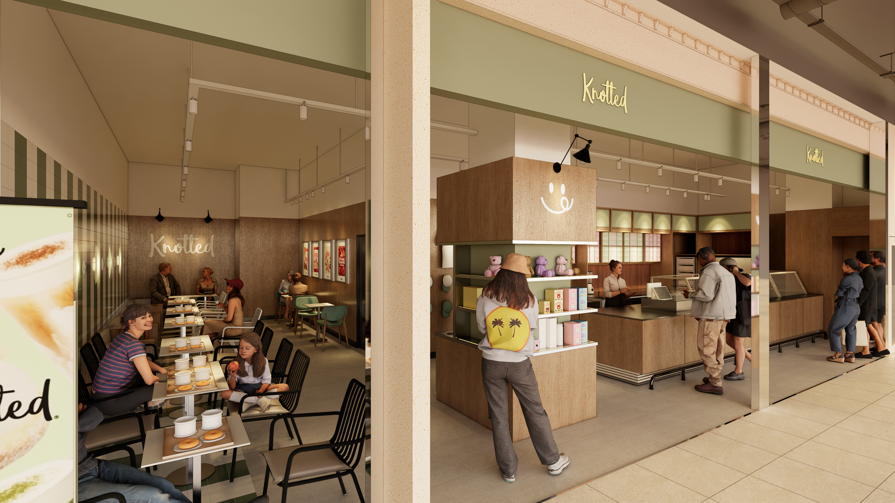
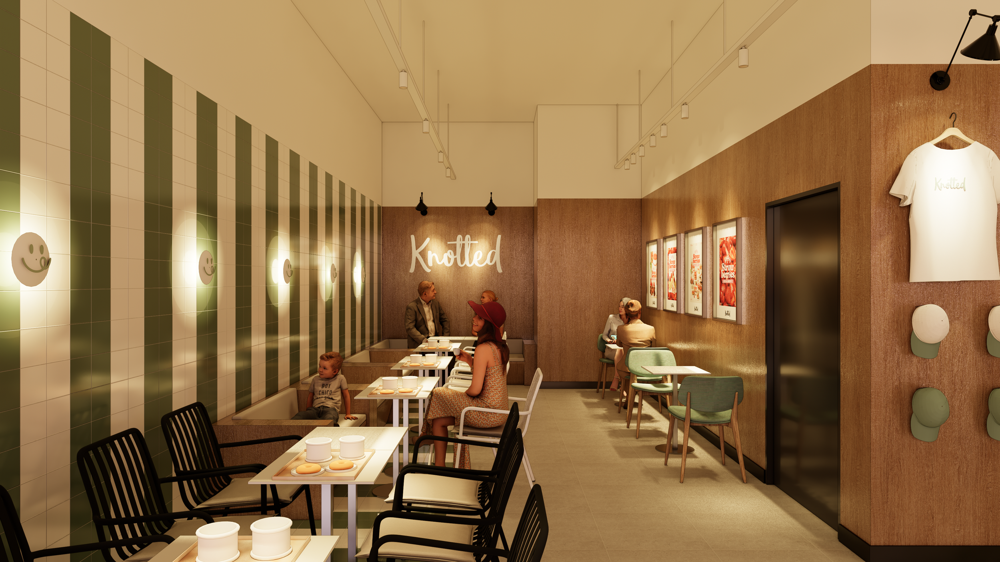
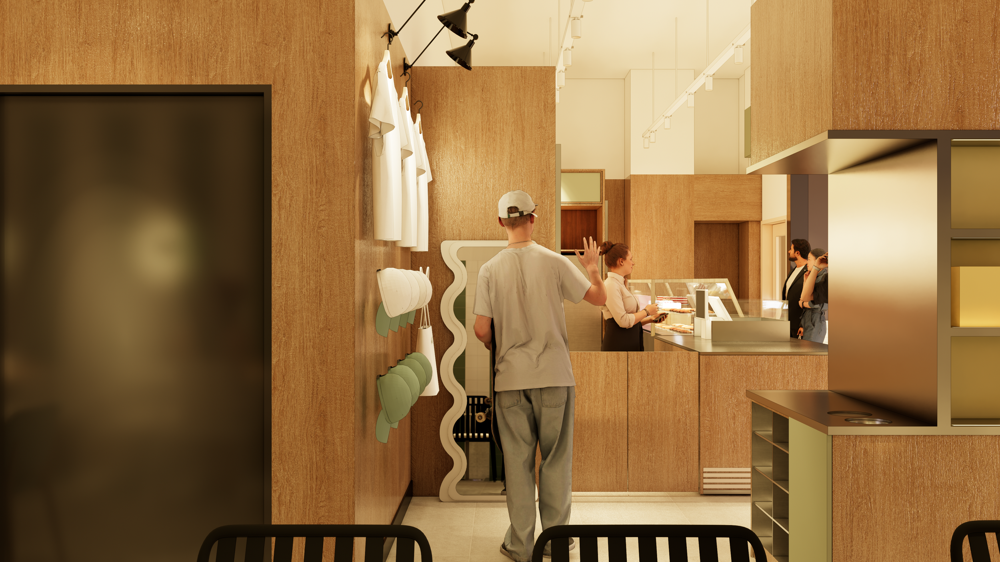
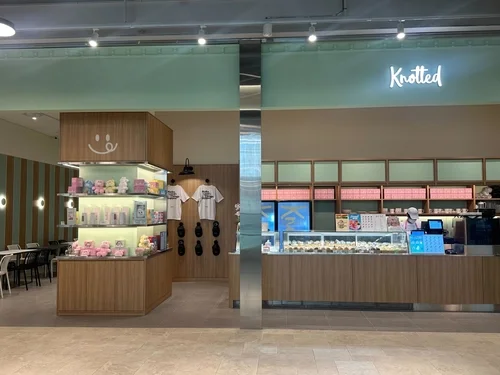
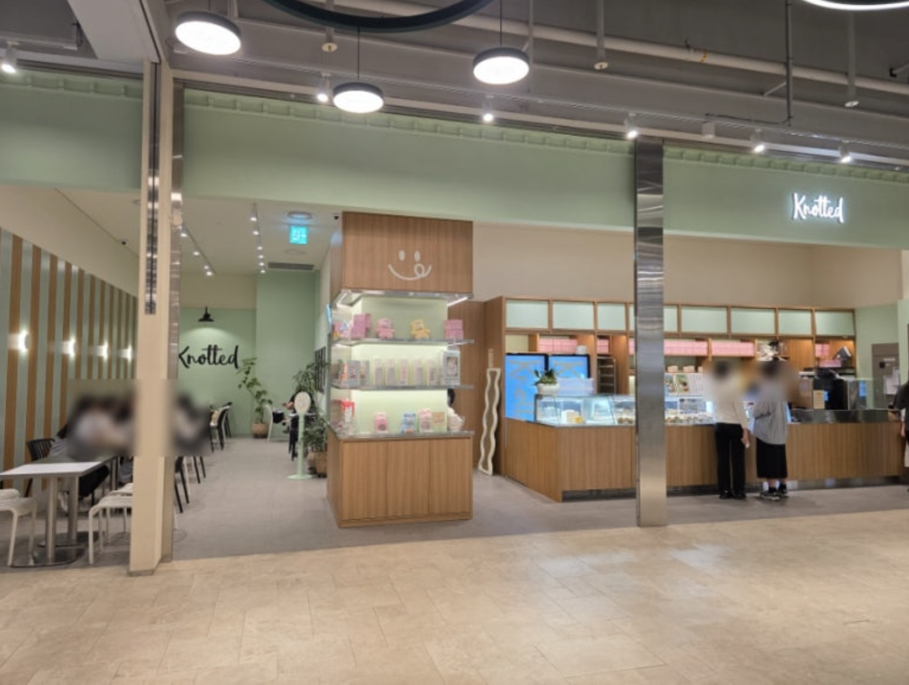
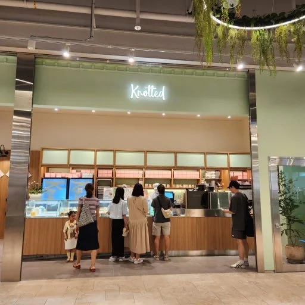
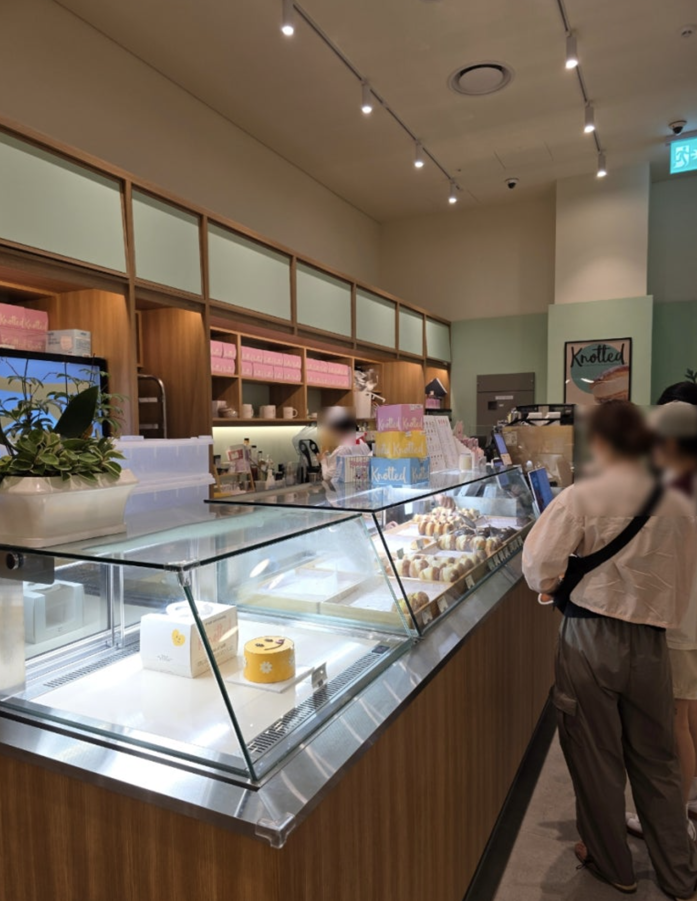
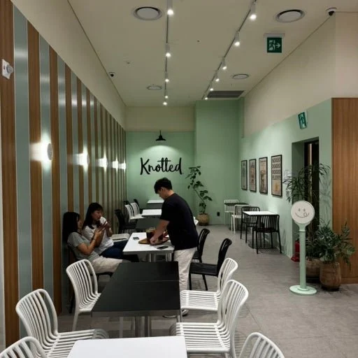
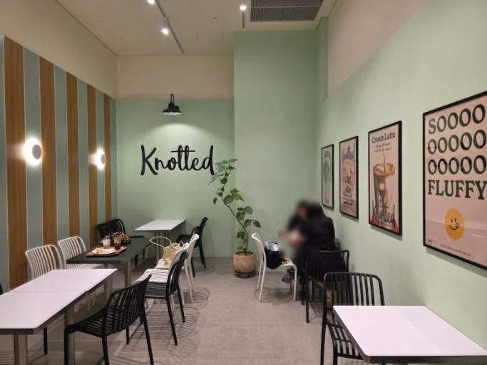

Knotted Guui
Bakery, café and lifestyle retail folded into one plan.베이커리·카페·라이프스타일 리테일을 하나의 평면으로.

- Client
- GFFG
- Location
- Guui, Seoul
- Year
- 2024
- Role
- Creative Director
- Scope
- Store concept, retail zoning, merchandise display integration
The brief. Bakery, café and lifestyle retail, folded into one plan. Guui is where Knotted stopped being only a bakery.
The idea. Let the zoning do the strategic work: come for a donut, leave having handled the brand’s products.
What I did. The store concept, retail zoning and the integration of merchandise displays, from renderings to the finished store.
브리프. 베이커리, 카페, 라이프스타일 리테일을 하나의 평면에. 구의는 노티드가 베이커리만이 아니게 된 지점입니다.
아이디어. 조닝이 전략을 수행하게. 도넛을 사러 왔다가 브랜드의 제품을 만져보고 나가도록.
역할. 매장 콘셉트, 리테일 조닝, 굿즈 진열 통합. 렌더링부터 완공된 매장까지.
Plan계획
One plan, three uses하나의 평면, 세 가지 쓰임
Renderings: the open storefront, the café corridor and the goods wall.렌더링. 열린 매장 전면, 카페 동선, 굿즈 월.



Retail리테일
Counter and goods카운터와 굿즈
The finished front: a goods display beside the bakery counter, under the Knotted sign.완공된 전면. 노티드 사인 아래, 베이커리 카운터 옆에 놓인 굿즈 진열대.




Café카페
A place to stay머무는 자리
Striped wood walls, mint paint and posters along the seating.스트라이프 목재 벽, 민트색 벽면, 좌석을 따라 걸린 포스터.

